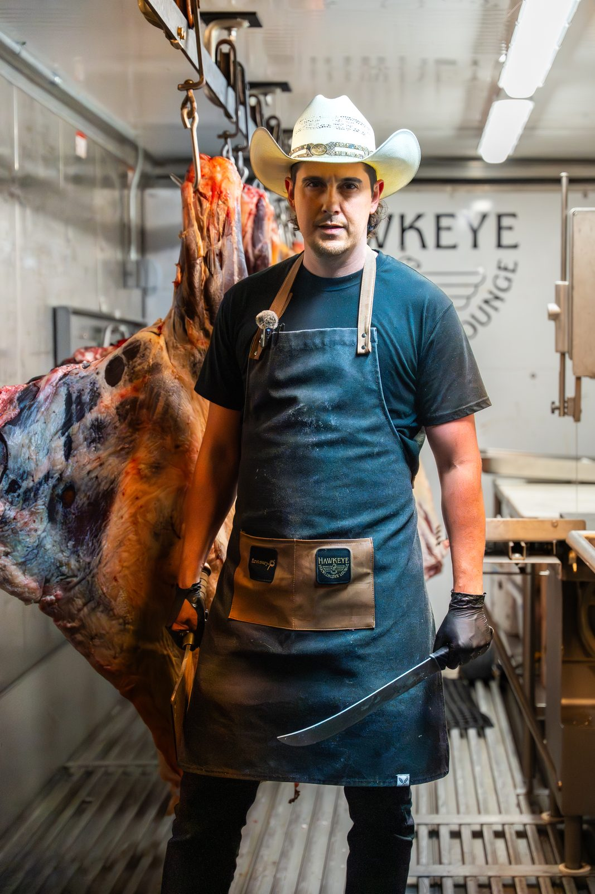
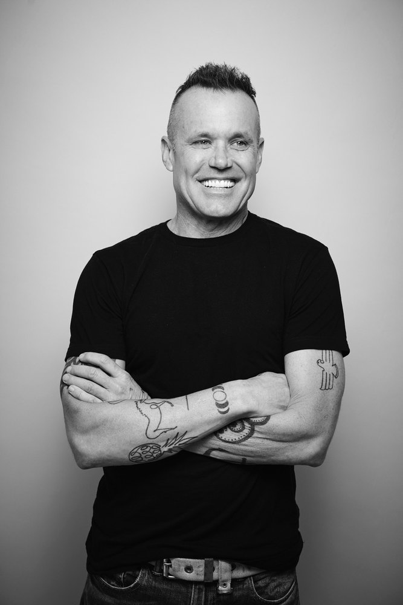

Food Network personality & Michelin-recommended chef

Television & national recognition
Under the leadership of Events Manager Alexa Marin, Hawkeye & Huckleberry Lounge has rapidly become one of Bend's premier destinations for private dining, corporate events, fundraisers, chef collaborations, ticketed experiences, nonprofit galas, and full-venue buyouts — a year-round destination for both local and national organizations.